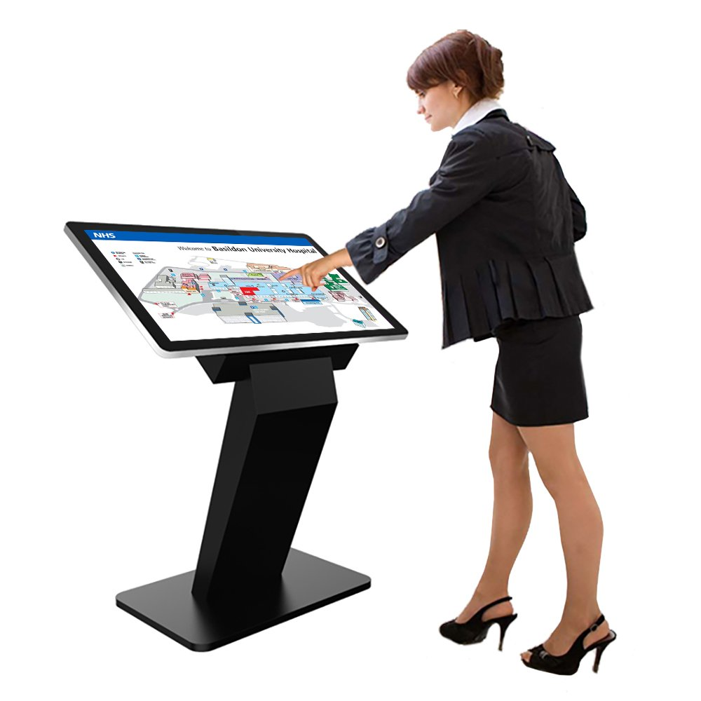
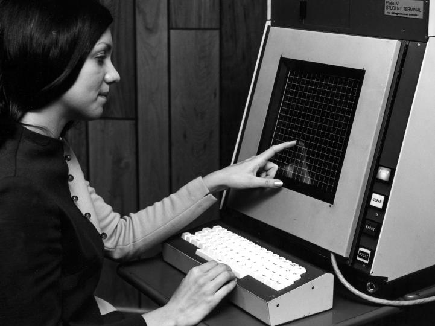
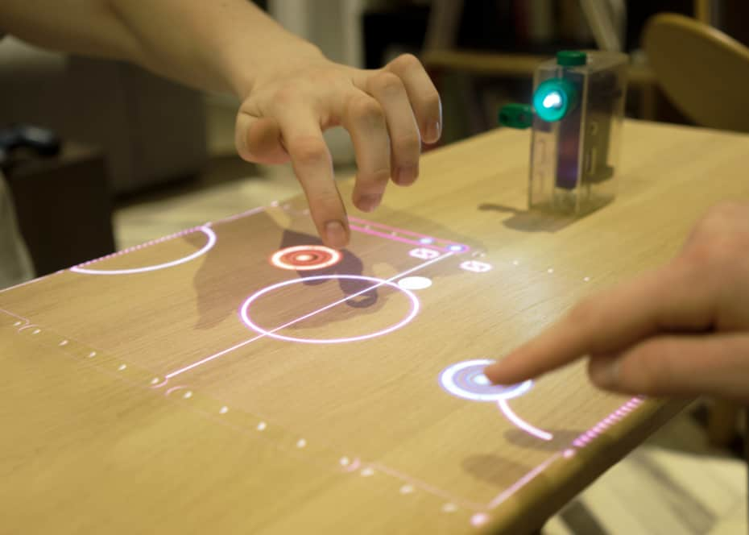
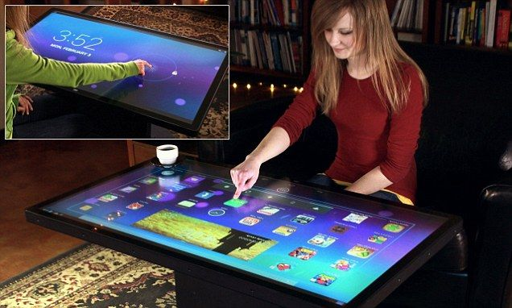

Las pantallas táctiles interactivas son una interfaz de entrada que ha revolucionado la interacción persona-ordenador (IPO). Permiten a los usuarios comunicarse directamente con la tecnología, eliminando la necesidad de dispositivos intermedios como teclados y ratones. Esto ha mejorado significativamente la forma en que las personas interactúan con la información y la tecnología en diversos contextos.
Estas pantallas actúan como periféricos de entrada y salida al mismo tiempo, permitiendo la entrada de datos y mostrando resultados de manera intuitiva y eficiente. Se utilizan en una amplia gama de dispositivos, desde teléfonos móviles y tabletas hasta cajeros automáticos y quioscos interactivos, lo que ha transformado la forma en que las personas interactúan con la tecnología en su vida cotidiana y en entornos públicos y empresariales.
La historia de las pantallas táctiles se remonta a mediados del siglo XX. En 1949, se concedió una patente a Corporativo Philco para un dispositivo capaz de dibujar en tiempo real mediante un estilete en una pantalla de tubo de rayos catódicos. En 1965, Eric A. Johnson inventó la primera pantalla táctil manejada con el dedo.
Desde la década de 1970, se patentaron la mayoría de las tecnologías significativas de pantallas táctiles. A partir de entonces, estas pantallas se han vuelto cada vez más populares y se utilizan en una amplia gama de dispositivos, revolucionando la forma en que interactuamos con la tecnología.
La mayoría de las tecnologías de pantalla táctil significativas se patentaron en las décadas de 1970 y 1980, y actualmente han expirado, lo que ha facilitado su adopción en una variedad de dispositivos. Esto ha llevado a la integración de pantallas táctiles en aviones, automóviles, consolas, sistemas de control de maquinaria y dispositivos de mano, lo que ha transformado la forma en que interactuamos con la tecnología en una amplia variedad de contextos.
La facilidad de uso y la interacción intuitiva que ofrecen las pantallas táctiles han contribuido a su adopción generalizada. Además, se proyectó que el mercado de pantallas táctiles para dispositivos móviles generaría miles de millones de dólares en ingresos en 2009, lo que demuestra su impacto en la tecnología moderna.
Existen varios tipos de pantallas táctiles comunes, cada uno con sus propias características y aplicaciones específicas. Algunos de los tipos más destacados incluyen:
Además de los tipos mencionados, existen otras tecnologías de pantallas táctiles, como la capacidad proyectada, infrarrojo, galgas extensométricas y más. Cada una tiene sus propias ventajas y desventajas, y se utilizan en diversas aplicaciones, lo que demuestra la versatilidad de las pantallas táctiles en la IPO.
Las pantallas táctiles son compatibles con una variedad de sistemas operativos, como Windows, macOS, iOS y Android. Existen programas específicos para el manejo de dispositivos táctiles, incluidos programas de reconocimiento de escritura manual, programas de dibujo y teclados virtuales, lo que mejora la experiencia de los usuarios al interactuar con la tecnología.
Las pantallas táctiles han revolucionado la IPO al proporcionar una forma intuitiva y directa de interactuar con la tecnología. Al eliminar la necesidad de dispositivos intermedios, como teclados y ratones, las pantallas táctiles permiten a las personas interactuar de manera más natural y eficiente con los sistemas informáticos.
Los beneficios de las pantallas táctiles en la IPO incluyen: